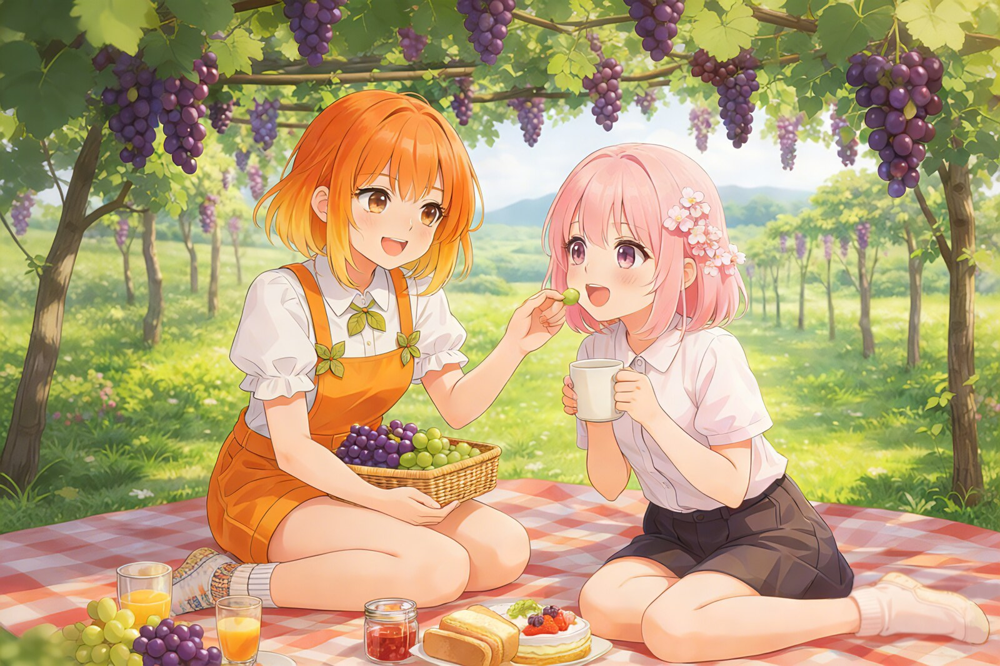

📄
GrapeLeafi 葡叶酱的温暖小窝
GrapeLeafi：葡叶酱的温暖小窝
GrapeLeafi 是 VineTurtleStudio 维护时间最长的项目——一个面向 Key 社游戏爱好者社区的纯静态粉丝站点「葡叶酱的温暖小窝」。它没有框架、没有构建工具、没有后端，全部代码就是几个 HTML、CSS 和 JS 文件，直接部署在 GitHub Pages 上。正因为"谁都能改"，它在几年间经历了多次手工迭代，也积累了大量静态网站的典型经验教训。
站点概览
网站围绕虚拟角色「葡叶酱」（GrapeLeafi）与「葡家」角色群设定展开，主色调是暖橙与奶黄，全站使用 Summer Pockets 主题的自定义鼠标指针，左下角常驻 Live2D 看板娘。页面结构非常克制：橙色固定页头 + 圆角卡片式内容区 + 浅橙页脚，移动端收进右上角汉堡抽屉菜单。四个页面（首页 / 葡家介绍 / 关于我们 / 联系我们）共享同一套样式表，每个页面的 favicon 还各用了一枚不同的「团子」图标，是早期复制页面时留下的小趣味。
